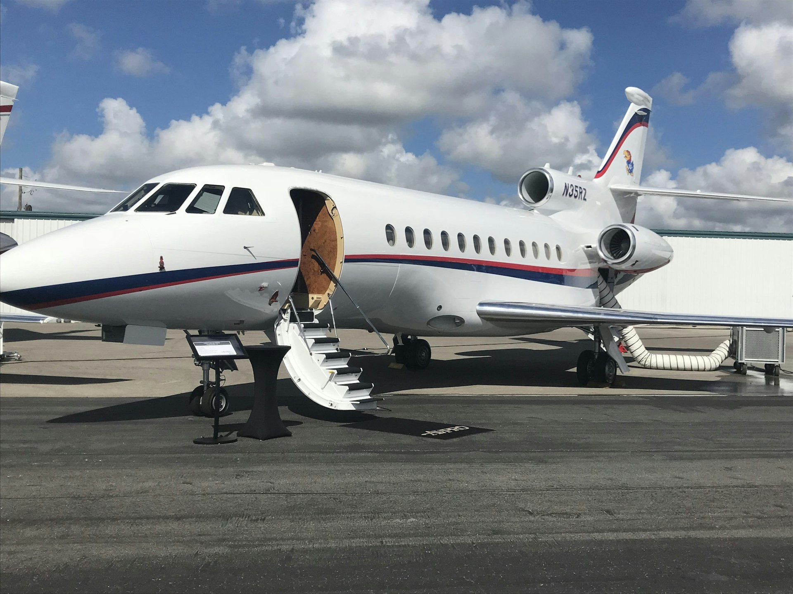

Introductie: Utrecht als Strategische Privéjet Base
Utrecht positioneert zich als het geografische en strategische centrum van Nederland voor business aviation. De stad ligt letterlijk in het midden van het land, op optimale afstand van alle major luchthavens: Schiphol (55 km west), Lelystad (35 km noord), Rotterdam The Hague Airport (65 km zuidwest), en Utrecht Airport Soesterberg (15 km noordoost). Deze centrale positie maakt Utrecht ideaal voor bedrijven en high-net-worth individuals die frequent Europees zakelijk verkeer hebben zonder de premium costs van een Amsterdam-based operatie.
Utrecht's business ecosystem is robuust en divers. De stad is hoofdkantoor van Rabobank - een van Nederland's grootste financiële instellingen met internationale operations - plus insurance giants zoals Achmea en a.s.r., technology consultancies (Capgemini, Ordina), life sciences companies in Utrecht Science Park, en een groeiend aantal scale-ups en family offices. Het Utrecht Science Park alleen al huisvest 600+ bedrijven en 12.000 werknemers in high-value sectors.
De combinatie van central location, strong corporate base, excellent highway connectivity (A2, A12, A27, A28 convergeren allemaal in Utrecht), en proximity tot zowel premium (Schiphol) als cost-effective (Lelystad) airports creëert een unique value proposition. Utrecht-based companies kunnen strategic flexibility maximaliseren: gebruik Schiphol voor VIP client visits en time-critical international missions, Lelystad voor regular European business travel met lagere costs, en eventueel Soesterberg voor future private aviation development.
Airport Options voor Utrecht-Based Private Jets
Utrecht's centrale ligging biedt unieke flexibiliteit in airport selection - meer keuze dan Amsterdam, Rotterdam of Den Haag clients hebben. Elke optie heeft distinct voordelen afhankelijk van mission profile, budget, en service requirements.
Option 1: Schiphol Amsterdam (Premium Choice)
Schiphol ligt 55 km ten westen van Utrecht centrum - ongeveer 30-40 minuten drive via A2 highway tijdens normale verkeerscondities (45-60 minuten tijdens morning rush 07:30-09:00). Voor Utrecht executives is dit de go-to keuze voor international business travel en VIP client entertainment.
Voordelen Schiphol voor Utrecht users:
- Premium FBO facilities: Jet Centre en Signature Flight Support met VIP lounges, Michelin-star catering, concierge services, en private vergaderruimtes
- 24/7 douane en immigratie afhandeling voor wereldwijde bestemmingen (Schengen en non-Schengen)
- Hoogste aircraft capabilities: ultra-long-range jets voor transatlantic en Asia missions
- Uitgebreide maintenance infrastructuur: Fokker Services, ExecuJet MRO, Jet Support on-field voor AOG support
- Best voor impressie-gevoelige situations: international clients verwachten Schiphol service standards
- Directe connectivity naar Amsterdam Zuidas (20 min) voor combined Utrecht-Amsterdam business days
Nadelen: Slot restrictions tijdens piekuren (boek 24-48 uur vooruit), hogere operating costs (€1.500-€3.000 per operatie), en strenge geluidsnormen voor night operations. Ground transportation cost vanaf Utrecht €80-€150 per rit via private car service.
Option 2: Lelystad Airport (Cost-Effective Alternative)
Lelystad Airport ligt slechts 35 km ten noordwesten van Utrecht - ongeveer 25-30 minuten drive via A27/A1. Dit is significant dichter bij Utrecht dan bij Amsterdam (45 km), wat Lelystad strategically attractive maakt voor Utrecht-based operations.
Voordelen Lelystad voor Utrecht users:
- Geen slot restrictions: volledige operationele flexibiliteit 24/7, perfect voor last-minute schedule changes
- 40-50% lagere operating costs: ground handling €600-€1.200 vs Schiphol €1.500-€3.000
- Snellere turnarounds: minder congestion, kortere taxi times, efficient single-terminal operations
- Cost-effective hangar storage: €1.800-€5.000/maand voor light/midsize jets vs Schiphol €3.000-€15.000
- Relaxed noise restrictions: night operations toegestaan zonder quota system
- Kortere drive tijd vanaf Utrecht dan Amsterdam: strategic proximity advantage
- Groeiende FBO services: Atlantic Aviation en local handlers bieden improving quality
Best use cases: Regular European business trips (Londen, Brussel, Frankfurt) waar premium FBO services minder critical zijn, leisure travel, positioning flights, en als primary aircraft base voor cost-conscious owners. Ground transportation €60-€100 per rit.
Option 3: Utrecht Airport Soesterberg (Limited/Future Potential)
Utrecht Airport Soesterberg (voormalige Vliegbasis Soesterberg, ICAO: EHSB) ligt slechts 15 km ten noordoosten van Utrecht centrum - 15-20 minuten drive via A28. Dit is closest airport option voor Utrecht, maar met significant operational limitations.
Current status Soesterberg: De voormalige militaire luchtmachtbasis sloot in 2008 en heeft sindsdien beperkte civilian General Aviation operations. De infrastructuur blijft impressive: 3.000 meter main runway (geschikt voor alle private jet types inclusief Global 7500 en Gulfstream G650), maar civilian facilities zijn minimal. Geen full-service FBO, geen regular commercial handling services, geen douane/immigratie voor international flights, onregelmatige operational hours.
Huidige gebruik: Small GA aircraft (Cessna, Piper, Diamond), special events en airshows (jaarlijkse Aviation Museum events), emergency diversions, en zeer occasionele corporate flights met advance permission en special handling arrangements. Het Nationaal Militair Museum en Aviodrome zorgen voor beperkt civilian traffic.
Future potential: Soesterberg heeft significant potential voor private aviation development gezien proximity tot Utrecht (Nederland's vierde stad), excellent runway infrastructure, en relatief weinig residential noise complaints door locatie. Vergelijk Rotterdam The Hague Airport - ook voormalig military field, nu thriving business aviation hub. Echter, development vereist substantiële investeringen in FBO facilities, douane infrastructure, en regulatory approvals. Timeline uncertain - 5-10 jaar minimum voor viable business aviation services.
Conclusie Soesterberg: Momenteel niet practical voor regular private jet operations. Utrecht users moeten Schiphol of Lelystad gebruiken. Monitor future developments - als Soesterberg civilian GA hub wordt, zou Utrecht de best-positioned city in Nederland zijn voor low-cost, high-convenience private aviation.
Option 4: Rotterdam The Hague Airport (Secondary Option)
Rotterdam ligt 65 km ten zuidwesten van Utrecht (50 minuten drive via A12/A20). Verder dan Schiphol en Lelystad, dus minder attractive voor Utrecht users, maar blijft viable option voor specific scenarios: Rotterdam-based clients/partners (combine meeting in Rotterdam met departure), Schiphol slot unavailability tijdens peak periods, of lower costs dan Schiphol met better services dan Lelystad. Ground handling €600-€1.500, positioning tussen Schiphol premium en Lelystad budget.
| Airport | Afstand Utrecht | Drive tijd | Handling kosten | Best voor |
|---|---|---|---|---|
| Schiphol | 55 km west | 30-40 min | €1.500-€3.000 | International VIP, transatlantic |
| Lelystad | 35 km noord | 25-30 min | €600-€1.200 | European business, leisure |
| Soesterberg | 15 km noordoost | 15-20 min | N/A (limited ops) | Future potential only |
| Rotterdam | 65 km zuidwest | 50 min | €600-€1.500 | Rotterdam meetings, overflow |
Utrecht Business Profile & Private Aviation Demand
Utrecht's business ecosystem genereert substantiële private aviation demand door de combinatie van financial services, corporate headquarters, consulting firms, en growing tech/life sciences sector.
Key Sectors Driving Private Jet Usage
Financial Services
Rabobank (headquarters in Utrecht) is Nederland's tweede grootste bank met international operations in 40+ landen. Executive travel naar European financial centers (Londen, Frankfurt, Zürich), emerging markets voor agricultural finance (Eastern Europe, Latin America), en client visits genereert frequent private aviation usage. Corporate flight department + charter arrangements voor board members en senior executives.
Insurance sector: Achmea (€20 miljard omzet, largest Dutch insurer) en a.s.r. (€7 miljard omzet) beide headquartered in Utrecht. International reinsurance negotiations, risk assessment site visits, en board meetings across Europe drive business travel. Typical profile: monthly trips naar Londen/Zürich/München voor reinsurance treaties.
Corporate Consulting & Technology
Capgemini Nederland, Ordina, en diverse boutique consultancies gevestigd in Utrecht serveren pan-European clients. Partner-level consultants met multi-country engagements gebruiken private jets voor efficiency: morning meeting in Utrecht, afternoon client workshop in Frankfurt, return same evening. Typical routes: Frankfurt (1u), München (1,5u), Parijs (1,5u), Milaan (2u).
Utrecht Science Park tech companies: 600+ bedrijven in AI, life sciences, clean tech. Post-exit entrepreneurs (successful founders met €10M+ liquidity events) entering private jet ownership market. Usage pattern: leisure-heavy (Nice, Ibiza, Swiss Alps skiing) met occasional business trips naar venture capital hubs (Londen, Berlin, Stockholm).
Family Offices & High-Net-Worth Individuals
Utrecht heeft estimated 2.000+ millionaire households, significant concentration van generational wealth van oude Nederlandse families, real estate fortunes, en recent tech exits. Family offices managing €50-€500 miljoen AUM gebruiken private aviation voor: wealth management meetings (Zürich, Geneva, Luxembourg), real estate site visits (European property portfolios), lifestyle travel (French/Italian Alps, Mediterranean), en multi-generational family trips.
Typical ownership model: fractional shares (NetJets, VistaJet) of joint ownership structures (3-4 families sharing Citation XLS+ or Challenger 350) om utilization rate te optimaliseren (30-50% per owner is efficient threshold).
Business Aviation Usage Patterns
Utrecht corporate users vertonen distinct patterns vs Amsterdam/Rotterdam:
- Higher European short-haul mix: 70-80% van trips zijn intra-European (onder 3 uur flight time) vs Amsterdam's 60% door minder transatlantic corporate travel
- Financial center focus: Londen, Frankfurt, Zürich, Luxembourg disproportionately populair vs leisure destinations
- Day-return missions: 40-50% van business trips zijn same-day returns (morning departure, evening return) maximizing time efficiency
- Cost-consciousness: Sterker preference voor Lelystad operations (30% usage vs 15% voor Amsterdam executives) door corporate cost control culture
- Fractional/charter preference: 60% charter vs 40% ownership, hoger dan Amsterdam (50/50 split) door more pragmatic approach to asset ownership
Cost Positioning: Utrecht vs Amsterdam vs Rotterdam
Utrecht biedt mid-range cost structure - duurder dan Rotterdam through primarily Schiphol dependency, goedkoper dan Amsterdam door strategic Lelystad usage en lagere ground transportation premiums.
| Cost Element | Amsterdam | Utrecht | Rotterdam |
|---|---|---|---|
| Primary airport | Schiphol | Schiphol/Lelystad | Rotterdam Airport |
| Ground handling | €1.500-€3.000 | €600-€3.000 | €600-€1.500 |
| Hangar storage/maand | €3.000-€15.000 | €1.800-€15.000 | €1.500-€8.000 |
| Ground transfer per trip | €40-€70 | €60-€150 | €15-€50 |
| Strategic advantage | Premium services | Airport flexibility | Lowest costs |
| Annual cost (100hrs) | €700.000-€800.000 | €650.000-€750.000 | €600.000-€700.000 |
Cost Optimization Strategies voor Utrecht Owners
Strategie 1: Lelystad-First Approach
Base aircraft op Lelystad (€1.800-€5.000/maand hangar vs Schiphol €3.000-€15.000), gebruik Lelystad voor 70% van European trips (bespaart €500-€1.000 per trip), repositioneer naar Schiphol only voor VIP clients of transatlantic missions. Jaarlijkse besparing: €30.000-€80.000 vs full Schiphol operations. Utrecht's proximity tot Lelystad (25 min) maakt dit practical vs Amsterdam (45 min).
Strategie 2: Fractional Ownership
Deel ownership met 2-3 other Utrecht businesses/families (Citation XLS+ €8 miljoen / 3 = €2,7M per owner). Shared fixed costs (crew, insurance, hangar) reduce individual burden 60-70%. Ideal voor 30-50 hours/year usage per owner. Coördinatie via professional management company (ExecuJet, Luxaviation) handelt scheduling conflicts.
Strategie 3: Jet Card + Ad-Hoc Charter Mix
Voor 25-50 hours/year users: combineer jet card (€150.000-€250.000 deposit voor guaranteed availability) met ad-hoc charter en empty legs. Avoid ownership fixed costs entirely (€300.000-€500.000/year) terwijl flexibility behouden blijft. Monitor empty leg aggregators (Victor, JetApp) voor 50-75% discounts op spontaneous trips.
Top Business Routes from Utrecht Region
Utrecht-based private aviation traffic vertoont distinct patterns gericht op European financial centers en corporate headquarters.
| Bestemming | Vliegtijd | Afstand | Charter Kosten (roundtrip) | Primaire Sector |
|---|---|---|---|---|
| Londen (LCY/LTN) | 1u | 450 km | €8.000-€15.000 | Banking, consulting |
| Frankfurt (FRA/HHN) | 1u | 400 km | €9.000-€17.000 | Financial services, ECB |
| Brussel (BRU/ANR) | 45 min | 200 km | €6.000-€12.000 | EU institutions, corporate |
| Zürich (ZRH) | 1,5u | 700 km | €11.000-€20.000 | Banking, wealth management |
| Genève (GVA) | 1,5u | 750 km | €12.000-€22.000 | Private banking, UNHQ |
| Parijs (LBG) | 1,5u | 500 km | €10.000-€18.000 | Corporate meetings |
| Luxembourg (LUX) | 1u | 350 km | €8.000-€15.000 | Fund management, finance |
| München (MUC) | 1,5u | 650 km | €10.000-€19.000 | Automotive, consulting |
| Milaan (LIN) | 2u | 900 km | €14.000-€25.000 | Fashion, luxury goods |
| Kopenhagen (CPH) | 1,5u | 750 km | €10.000-€18.000 | Scandinavian business |
Aircraft Recommendations voor Utrecht Routes
Light Jets (Citation CJ3+, Phenom 300, Learjet 75): Perfect voor 80% van Utrecht business routes - alle bestemmingen onder 2.500 km met 4-6 passagiers. Operating costs €2.500-€4.000 per vlieguur maken frequent travel economic viable. Best choice voor regular European business (Londen, Frankfurt, Brussel weekly/monthly).
Midsize Jets (Citation XLS+, Hawker 900XP, Challenger 350): Ideal voor longer European missions (2-3 uur) met more passengers (7-9) of extra comfort. Utrecht-Zürich, Geneva, Milaan perfect range. Slight premium (€4.500-€7.000/hour) maar significantly better cabin experience voor client entertainment.
Super Midsize/Large Cabin (Citation X, Gulfstream G280/G450): Necessary only voor transatlantic missions (Utrecht-New York via Schiphol) of Middle East trips (Dubai). Higher costs (€6.000-€12.000/hour) justify alleen voor long-range requirements. Voor Utrecht's primarily European focus: overkill voor daily operations.
Privéjet Kopen in Utrecht
Utrecht buyers hebben toegang tot dezelfde Nederlandse en international brokerage network als Amsterdam clients, met enkele unique advantages rond financing en basing.
Local & Regional Aircraft Brokers
Nederlandse brokers: Valk Aircraft Brokerage (Antwerp-based, 70+ jaar ervaring, strong Benelux network), Amsterdam Jet Services (specialist in Cessna Citation series, popular in Dutch market), NorthSky Aviation (Embraer en Bombardier focus). Utrecht proximity maakt viewings praktisch - 30 min naar Schiphol voor aircraft inspections, 25 min naar Lelystad waar veel pre-owned inventory stationed is.
International brokers active in Nederland: Jetcraft (werelds grootste met 1.000+ transactions/year), evoJets (pre-owned specialist, data-driven pricing), Colibri Aircraft (light jet focus), Allen Aircraft Sales (US-based maar strong European presence). Digital platforms: Controller.com, AvBuyer, Trade-a-Plane voor DIY research.
Financing & Tax Structuring
Utrecht heeft strategic advantage voor aircraft financing through Rabobank's aviation finance division en other local lenders familiar met aviation assets.
Nederlandse BV Structure: Most common approach voor business use. BV (besloten vennootschap) owns aircraft en leases terug aan holding/operating company. Voordelen: BTW recovery (21% van purchase price) voor zakelijk gebruik, operating costs tax-deductible, depreciation benefits (linear over 10-15 jaar of accelerated), mogelijk to generate charter revenue (offset fixed costs 20-40%).
Financing terms: Typical 20-30% down payment, 5-10 jaar term, interest rates 4-7% (varieert met creditworthiness en aircraft type). Rabobank en ING aviation desks kennen Nederlandse market en EASA registration requirements. Collateral: aircraft zelf plus possibly corporate guarantees.
BTW considerations: Critical voor Nederlandse buyers. 21% BTW due op purchase maar recoverable met proper business use documentation (flight logs showing 90%+ zakelijk gebruik, passenger manifests, business purpose). Import from US: additional import duties 2-5% applicable but offsettable tegen BTW credit.
Voor complete buying guide inclusief pre-buy inspections, escrow process, en registration requirements, zie onze Privéjet Kopen Gids.
FBO Services & Ground Handling
Utrecht users accessen primarily Schiphol en Lelystad FBOs. Service quality vergelijkbaar - difference zit in positioning (premium vs budget) en amenities level.
Schiphol FBOs (Premium Option)
Jet Centre - General Aviation Terminal East
Largest en meest luxueuze Schiphol FBO. Services: VIP lounges met designer interieur en privacy, executive vergaderruimtes voor last-minute negotiations, shower/refresh facilities, expedited customs/immigration (dedicated officers), concierge team voor hotels/restaurants/events, premium catering partnerships (Michelin-star opties), aircraft detailing/cleaning, crew briefing rooms met weather/flight planning stations. Handling fees €1.200-€2.500 per operation afhankelijk van aircraft size. Popular bij Utrecht executives voor VIP client meetings - impress factor hoog.
Signature Flight Support
International FBO chain met 200+ wereldwijde locaties. Voordeel: consistency en reciprocal services (gebruik Signature Teterboro voor US trips, build relationship). Services vergelijkbaar met Jet Centre maar slightly less luxurious. Handling €1.000-€2.200. Strong focus op crew amenities en operational efficiency vs pure luxury.
Air Service Liège Netherlands
Cost-effective ground handler zonder premium lounge facilities. Focus op operational essentials: ramp handling, fueling, customs coordination, hangar access. Popular voor positioning flights, maintenance ferry trips, en cost-conscious owners. Handling €800-€1.500 - significant savings vs premium FBOs voor straightforward operations.
Lelystad FBOs (Budget-Friendly Option)
Atlantic Aviation Lelystad
Primary FBO met growing capabilities. VIP lounge (basic maar comfortable), douane/immigratie voor Schengen en non-Schengen flights, fueling (Jet A-1) met competitive pricing €2,40-€2,70/liter, hangar coordination, crew facilities, car service arrangements. Handling €600-€1.200 - ongeveer half van Schiphol costs. Quality adequate voor business trips waar FBO lounge minder belangrijk is dan operational efficiency.
General Aviation Services
Local operator met personal touch. Smaller scale dan Atlantic maar flexible en responsive. Popular bij owner-flown aircraft en smaller operators. Handling €500-€900. Best voor regular users die relationship building waarderen.
Service Comparison voor Utrecht Users
| FBO | Locatie | Drive vanaf Utrecht | Handling Fee | Best Voor |
|---|---|---|---|---|
| Jet Centre | Schiphol | 30-40 min | €1.200-€2.500 | VIP clients, international |
| Signature | Schiphol | 30-40 min | €1.000-€2.200 | Regular business, US trips |
| Air Service Liège | Schiphol | 30-40 min | €800-€1.500 | Cost-conscious ops |
| Atlantic Aviation | Lelystad | 25-30 min | €600-€1.200 | European business travel |
| GA Services | Lelystad | 25-30 min | €500-€900 | Regular users, personal service |
Waarom Utrecht Kiezen als Privéjet Base
Utrecht biedt compelling value proposition die distinct advantages combineert voor business aviation users.
Geographic Center of Netherlands
Letterlijk het midden van het land - equidistant van Amsterdam (35 km), Rotterdam (50 km), Den Haag (50 km), en Eindhoven (80 km). Voor companies met nationwide operations: Utrecht minimizes travel time tot alle major business centers. Voorbeeld: CEO based in Utrecht kan morning meeting in Amsterdam (30 min drive), midday Rotterdam (40 min), afternoon Den Haag (40 min) - allemaal same day without private jet. Met private jet: add European destinations tot same-day range.
Excellent Highway Connectivity
A2 (noord-zuid corridor Amsterdam-Maastricht), A12 (oost-west Den Haag-Duitse grens), A27 (Utrecht-Breda), A28 (Utrecht-Groningen) convergeren allemaal in Utrecht. Result: fastest ground access tot alle Nederlandse airports plus efficient distribution naar nationwide client base. Critical voor business model requiring frequent site visits (consulting, real estate, logistics).
Airport Flexibility Advantage
Utrecht is only major Nederlandse city met practical access tot three airports binnen 40 minuten: Schiphol (premium), Lelystad (budget), Soesterberg (future potential). Amsterdam heeft Schiphol + Lelystad maar Rotterdam verder. Rotterdam heeft only Rotterdam Airport close. Den Haag gebruikt Rotterdam of Schiphol beide 20-30 min. Utrecht's flexibility allows tactical optimization: match airport tot mission requirements en budget.
Strong Corporate Ecosystem
Financial sector (Rabobank, Achmea, a.s.r.), consulting/tech (Capgemini, Ordina, science park companies), plus family offices creëren critical mass voor business aviation services. Aircraft management companies, charter operators, crew training facilities, en MRO providers service Utrecht market - infrastructure exists.
Quality of Life for Crew Basing
International schools (Utrecht International Primary School, International School Utrecht), English-speaking expat community, cultural amenities (museums, restaurants, events), lower housing costs dan Amsterdam (30-40% goedkoper), en excellent liveability rankings maken Utrecht attractive voor crew recruitment. Pilot shortage is real issue - cities waar pilots willen wonen hebben competitive advantage.
Mid-Range Cost Structure
Not cheapest (Rotterdam), not most expensive (Amsterdam), but optimale balance van costs en capabilities. Strategic Lelystad usage door proximity offsets premium Schiphol operations. Total annual costs €50.000-€100.000 lager dan pure Amsterdam operations terwijl service quality comparable blijft.
Comparison: Utrecht vs Amsterdam vs Rotterdam
| Factor | Utrecht | Amsterdam | Rotterdam |
|---|---|---|---|
| Primary airport | Schiphol/Lelystad | Schiphol | Rotterdam Airport |
| Airport drive tijd | 25-40 min | 15-45 min | 10-15 min |
| Airport flexibility | Excellent (3 opties) | Good (2 opties) | Limited (1 primary) |
| FBO quality | Premium-Budget mix | Premium | Standard |
| Operating costs | Mid-range | Highest | Lowest |
| Corporate sector | Financial, consulting | Finance, tech, international | Maritime, logistics, energy |
| Geographic position | Center Nederland | Northwest | Southwest |
| Best for | Nationwide business | International prestige | Cost optimization |
FAQ - Utrecht Privéjet
Start Uw Privéjet Zoektocht Vanuit Utrecht
Ontdek welke privéjet optie het beste past bij uw centrale Nederlandse business operations - kopen, huren, of fractional ownership.